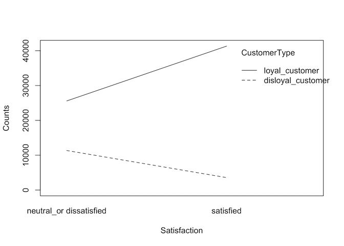

Analyse The Airlines Passengers’ Satisfaction
Table of content.
- 1 Project Charter.
- 2 About the dataset.
- 3 Exploratory data analysis.
- 4 Investigate the cost of customer churn.
- 5 Data Preprocessing.
- 6 Model training and evaluation.
- 7 Save the models.
- 8 Model comparison.
- 9 Model interpretation.
- 10 Explore the important variable’s effect on the cost of customer churn.
- 11 Conclusion.
1 Project Charter.
Problem statement:
Airline industry is getting more competitive due to the disruption of budget airlines, which allow customers to travel to their destination at a much cheaper price though with less service quality. If the customer experience at Falcon Airlines is predominantly negative, it will quickly become detrimental to the company’s profit due to high capital expenditure and maintenance cost.
Business case:
Knowing the customers’ preference and feedback allows Falcon Airlines to improve their standards and services on areas that matter to the customers, and strategize the emotional selling points for their marketing campaign to stand out among their competitors, hence maintaining the company’s competitiveness and customer loyalty.
Project goal:
Predict whether a passenger will be satisfied or not given the rest of the details are provided and identify which variables/features play an important role in swaying a passenger feedback towards ‘satisfied’.
Project scope:
Perform data mining on the entire journey of the customers experience beginning from website experience, online services, and departure to onboard experience, flight duration, and arrival.
2 About the dataset.
There are 2 datasets:
- The
Flightdata has information related to passengers and the performance of flights in which they travelled. - The
Surveydata is the aggregated data of surveys collected post service experience.
Assumptions about the survey:
- Integrity: We assume customers are providing their honest and careful feedback for the survey.
- Situation & context: We assume the customers aren’t hurry to
complete the survey after arriving at the destination and
experiencing the service since most customers (about 69%) are
business travellers as they could be busy with work. This would
result in a bias outcome.
- Question & feedback: We assume those survey questions are what the customers care about as the customers can’t fill in any feedback other than choosing on a 1–5 scale based on those fixed questions. The outcome will not be holistic if the company assumes these are the only questions that matter to the customers. Additional research has to be done to obtain a more accurate picture of our customers’ preference and feedback.
Data limitation:
- The variables/features from the survey data will not be suitable to train the model to predict the customers’ satisfaction, because we will have to constantly gather the same survey data from new customers to make future prediction which doesn’t make sense since we could directly ask them to indicate their satisfaction level. However, the goal of this project is to identify the important variables/features that can significantly improve customers’ satisfaction. Hence, we are using the model to identify important variables/features based on their effect on the satisfaction outcome.
- Survey is not perfect method for gathering customers’ preference and feedback, hence additional research need to be done to obtain a more holistic picture.
3 Exploratory data analysis.
df_falconAirlines = read_rds('00_dataset/df_falconAirlines.rds')
head(df_falconAirlines, 10)## # A tibble: 10 x 24
## CustomerId Satisfaction Gate_location Seat_comfort Departure_Arriv…
## <dbl> <fct> <fct> <fct> <fct>
## 1 149965 satisfied need_improve… extremely_p… extremely_poor
## 2 149966 satisfied manageable extremely_p… extremely_poor
## 3 149967 satisfied manageable extremely_p… <NA>
## 4 149968 satisfied manageable extremely_p… extremely_poor
## 5 149969 satisfied manageable extremely_p… extremely_poor
## 6 149970 satisfied manageable extremely_p… extremely_poor
## 7 149971 satisfied manageable extremely_p… extremely_poor
## 8 149972 satisfied manageable extremely_p… <NA>
## 9 149973 satisfied manageable extremely_p… extremely_poor
## 10 149974 satisfied convenient extremely_p… extremely_poor
## # … with 19 more variables: Food_drink <fct>, Inflightwifi_service <fct>,
## # Inflight_entertainment <fct>, Online_support <fct>,
## # Ease_of_Onlinebooking <fct>, Onboard_service <fct>, Leg_room_service <fct>,
## # Baggage_handling <fct>, Checkin_service <fct>, Cleanliness <fct>,
## # Online_boarding <fct>, Gender <fct>, CustomerType <fct>, TypeTravel <fct>,
## # Class <fct>, Age <dbl>, Flight_Distance <dbl>, DepartureDelayin_Mins <dbl>,
## # ArrivalDelayin_Mins <dbl>
3.1 Investigate the data structure.
3.1.1 Check duplicates.
df_falconAirlines %>%
duplicated() %>%
as_tibble() %>%
summarise(total_duplicates = sum(value)) ## # A tibble: 1 x 1
## total_duplicates
## <int>
## 1 0
Findings:
- The joined dataset contains no duplicates.
3.1.2 Check null percentage.
df_falconAirlines %>%
summarise_all(~ sum(is.na(.)) / length(.) * 100) %>%
gather() %>%
filter(value > 0) %>%
set_names(c('variables', 'null_percent')) %>%
mutate(null_percent = round(null_percent, 2)) ## # A tibble: 6 x 2
## variables null_percent
## <chr> <dbl>
## 1 Departure_Arrival_time_convenient 9.07
## 2 Food_drink 9
## 3 Onboard_service 7.9
## 4 CustomerType 10.0
## 5 TypeTravel 10
## 6 ArrivalDelayin_Mins 0.31
Findings:
CustomersTypeshould contain either loyal or disloyal customers. Null could probably mean the company is unable to accurately identify the customers’ loyalty. I will apply Bagged Trees Imputation to fill the null.TypeTravelshould contain either business or personal travel. Null could probably mean the company is unable to identify the customers’ travel motive. I will apply Bagged Trees Imputation to fill the null.ArrivalDelayin_Minscontains 0.31% of null.Departure_Arrival_time_convenientcontains 9% of null. It should contain customer’s rating. Instead of assigning an “unknown” category. I will apply Bagged Trees Imputation to fill the null so that I can transform the variables into numerical ordinal values.- As for
Food_drinkandOnboard_service, null could probably mean customers did not order any food and drink or ask for any onboard service, thus no rating is given. Instead of assigning a “not applicable” category, I will apply Bagged Trees Imputation to fill the null instead so that I can transform the variables into numerical ordinal values.
3.1.3 Summarise data.
df_falconAirlines %>% summary()## CustomerId Satisfaction Gate_location
## Min. :149965 neutral_or dissatisfied:41156 very_inconvenient: 1
## 1st Qu.:172694 satisfied :49761 inconvenient :15876
## Median :195423 need_improvement :17113
## Mean :195423 manageable :23385
## 3rd Qu.:218152 convenient :21088
## Max. :240881 very_convenient :13454
##
## Seat_comfort Departure_Arrival_time_convenient
## extremely_poor : 3368 extremely_poor : 4199
## poor :14687 poor :13210
## need_improvement:20002 need_improvement:14539
## acceptable :20552 acceptable :14806
## good :19789 good :18840
## excellent :12519 excellent :17079
## NA's : 8244
## Food_drink Inflightwifi_service
## extremely_poor : 3794 extremely_poor : 96
## poor :13400 poor :10311
## need_improvement:17359 need_improvement:18894
## acceptable :17991 acceptable :19199
## good :17245 good :22159
## excellent :12947 excellent :20258
## NA's : 8181
## Inflight_entertainment Online_support
## extremely_poor : 2038 extremely_poor : 1
## poor : 8198 poor : 9805
## need_improvement:13527 need_improvement:12063
## acceptable :16995 acceptable :15090
## good :29373 good :29042
## excellent :20786 excellent :24916
##
## Ease_of_Onlinebooking Onboard_service Leg_room_service
## extremely_poor : 12 extremely_poor : 3 extremely_poor : 322
## poor : 9370 poor : 8537 poor : 7779
## need_improvement:13896 need_improvement:11018 need_improvement:15156
## acceptable :15686 acceptable :17411 acceptable :15775
## good :27993 good :26373 good :27814
## excellent :23960 excellent :20396 excellent :24071
## NA's : 7179
## Baggage_handling Checkin_service Cleanliness
## extremely_poor : 0 extremely_poor : 1 extremely_poor : 4
## poor : 5559 poor :10761 poor : 5375
## need_improvement: 9301 need_improvement:10813 need_improvement: 9283
## acceptable :17233 acceptable :24941 acceptable :16930
## good :33822 good :25483 good :34246
## excellent :25002 excellent :18918 excellent :25079
##
## Online_boarding Gender CustomerType
## extremely_poor : 9 female:46186 disloyal_customer:14921
## poor :10777 male :44731 loyal_customer :66897
## need_improvement:13035 NA's : 9099
## acceptable :21427
## good :24676
## excellent :20993
##
## TypeTravel Class Age Flight_Distance
## business_travel:56481 eco :40758 Min. : 7.00 Min. : 50
## personal_travel:25348 eco_plus: 6624 1st Qu.:27.00 1st Qu.:1360
## NA's : 9088 business:43535 Median :40.00 Median :1927
## Mean :39.45 Mean :1982
## 3rd Qu.:51.00 3rd Qu.:2542
## Max. :85.00 Max. :6950
##
## DepartureDelayin_Mins ArrivalDelayin_Mins
## Min. : 0.00 Min. : 0.00
## 1st Qu.: 0.00 1st Qu.: 0.00
## Median : 0.00 Median : 0.00
## Mean : 14.69 Mean : 15.06
## 3rd Qu.: 12.00 3rd Qu.: 13.00
## Max. :1592.00 Max. :1584.00
## NA's :284
3.2 Explore categorical variables.
# Check target variable's class proprotion.
df_falconAirlines$Satisfaction %>% summary() / nrow(df_falconAirlines)## neutral_or dissatisfied satisfied
## 0.4526766 0.5473234
# Visualise the distribution.
plotBarCat(df_falconAirlines, 'Satisfaction')Findings from the target variable:
- Looking at the
Satisfactionvariable, about 46% of the customers feel neutral/dissatisfied, whereas 54% feel satisfied. Hence, the dataset has a balanced class.
flightCat = c('CustomerType', 'TypeTravel', 'Class')
for (cat in flightCat) {
df_falconAirlines %>%
plotInteract('Satisfaction', cat, 'Satisfaction')
}
Findings from the variable’s interaction with customer satisfaction:
- Each of the variables/features above seem to contribute a medium impact to the model predictability looking how the lines show the opposite trend or direction.
3.3 Explore numerical variables.
numPlot1 = plotDensityNum(df_falconAirlines, 'Age', 'Satisfaction')
numPlot2 = plotDensityNum(df_falconAirlines, 'Flight_Distance', 'Satisfaction')
multi_plot = grid.arrange(numPlot1, numPlot2, nrow=2, ncol=1)# Zoomed in the plot.
numPlot3 = plotDensityNumLim(df_falconAirlines, 'DepartureDelayin_Mins', 'Satisfaction')
numPlot4 = plotDensityNumLim(df_falconAirlines, 'ArrivalDelayin_Mins', 'Satisfaction')
multi_plot = grid.arrange(numPlot3, numPlot4, nrow=2, ncol=1)Findings:
- Looking at the
Agefeature, there is a small separation between the 2 distributions. It seems that there are greater proportion of customers below age 40 feel neutral/dissatisfied than those above age 40. I will discretise the numerical value into categorical bins to improve the feature interpretability when investigating the feature weight or importance. - Looking at the
Flight_Distancefeature, there is no significant separation between the 2 distributions. It might be a weak predictor for customers’ satisfaction, hence I will remove it. - Looking at
DepartureDelayin_MinsandArrivalDelayin_Minsfeatures, both shows only a slight separation between the 2 distributions (red and turquoise). I will keep these variables to see how it performs.
3.4 Check the correlation.
# Find correlation between each numerical variables.
df_falconAirlines %>%
select(Age, Flight_Distance, DepartureDelayin_Mins, ArrivalDelayin_Mins) %>%
cor(method="pearson", use="pairwise.complete.obs") %>%
round(2) %>%
get_lower_tri() ## Age Flight_Distance DepartureDelayin_Mins
## Age 1.00 NA NA
## Flight_Distance -0.25 1.00 NA
## DepartureDelayin_Mins -0.01 0.11 1.00
## ArrivalDelayin_Mins -0.01 0.11 0.97
## ArrivalDelayin_Mins
## Age NA
## Flight_Distance NA
## DepartureDelayin_Mins NA
## ArrivalDelayin_Mins 1
Findings from the correlation between numerical variables:
DepartureDelayin_MinsandArrivalDelayin_Minshave a correlation of 0.97. I will removeArrivalDelayin_Minssince it contains 0.31% of null.
# Find correlation between each numerical and categorical variables.
corr_results = df_falconAirlines %>%
select(-CustomerId, -CustomerType, -TypeTravel, -Gender, -Satisfaction) %>%
mutate_all(as.numeric) %>%
cor(method="spearman", use="pairwise.complete.obs")
# For selecting variables that have correlation above 0.6
cols = c('Online_support', 'Ease_of_Onlinebooking',
'Seat_comfort', 'Food_drink', 'Online_boarding')
# Display the correlation results.
corr_results[cols, cols] %>%
round(2) %>%
get_lower_tri() ## Online_support Ease_of_Onlinebooking Seat_comfort
## Online_support 1.00 NA NA
## Ease_of_Onlinebooking 0.60 1.00 NA
## Seat_comfort 0.12 0.20 1.00
## Food_drink 0.03 0.03 0.71
## Online_boarding 0.65 0.66 0.13
## Food_drink Online_boarding
## Online_support NA NA
## Ease_of_Onlinebooking NA NA
## Seat_comfort NA NA
## Food_drink 1.00 NA
## Online_boarding 0.01 1
Findings from the Spearman correlation between ordinal variables:
Ease_of_Onlinebooking,Online_boarding,Online_supportare about 60% correlated. It probably makes sense because these variables contribute to the overall user experience, hence should be taken in consideration as a whole should Falcon Airlines makes any improvement to the website or app.Food_drinkandseat_comfortare about 70% correlated.
I can apply variance inflation factor when training the logistic regression model to avoid multi-collinearity issue.
# Select categorical variable names.
catNames = df_falconAirlines %>%
select_if(is.factor) %>%
names()
# Preview.
catNames## [1] "Satisfaction" "Gate_location"
## [3] "Seat_comfort" "Departure_Arrival_time_convenient"
## [5] "Food_drink" "Inflightwifi_service"
## [7] "Inflight_entertainment" "Online_support"
## [9] "Ease_of_Onlinebooking" "Onboard_service"
## [11] "Leg_room_service" "Baggage_handling"
## [13] "Checkin_service" "Cleanliness"
## [15] "Online_boarding" "Gender"
## [17] "CustomerType" "TypeTravel"
## [19] "Class"
# Find correlation between each categorical variables with `Satisfaction`.
df_falconAirlines %>%
cramer_corr(catNames, 'Satisfaction') %>%
as.data.frame() %>%
filter(variable != 'Baggage_handling') %>%
arrange(desc(cramer)) ## variable cramer
## 1 Inflight_entertainment 0.639268085016792
## 2 Seat_comfort 0.471769575989941
## 3 Ease_of_Onlinebooking 0.453261862571313
## 4 Online_support 0.431646347233728
## 5 Onboard_service 0.360286620354981
## 6 Online_boarding 0.348133711652928
## 7 Leg_room_service 0.337433279445608
## 8 Class 0.314836878500457
## 9 Cleanliness 0.304914968262666
## 10 CustomerType 0.293597832545281
## 11 Checkin_service 0.281377235539842
## 12 Food_drink 0.265839591386635
## 13 Inflightwifi_service 0.243609829903224
## 14 Gender 0.211114521751906
## 15 Gate_location 0.14568970482666
## 16 TypeTravel 0.111038588549111
## 17 Departure_Arrival_time_convenient 0.0459484483394978
Findings from Cramer results for ordinal and categorical variables:
Inflight_entertainmentseems to have very strong relationship (0.63) withSatisfaction(target variable), followed bySeat_comfort,Ease_of_Onlinebooking,Online_supportandOnboard_service. These variables might be relatively strong predictors for customers’ satisfaction.
3.5 Investigate the ‘Age’ variable.
# Output the cumulative percentage of customers with different age.
df_falconAirlines %>%
group_by(Age) %>%
summarise(Percent = n() / nrow(df_falconAirlines)) %>%
ungroup() %>%
mutate(Cumsum = scales::percent(cumsum(Percent)),
Percent = scales::percent(Percent)) %>%
filter(Age <= 21) ## # A tibble: 15 x 3
## Age Percent Cumsum
## <dbl> <chr> <chr>
## 1 7 0.51% 0.5%
## 2 8 0.60% 1.1%
## 3 9 0.68% 1.8%
## 4 10 0.62% 2.4%
## 5 11 0.64% 3.0%
## 6 12 0.61% 3.7%
## 7 13 0.62% 4.3%
## 8 14 0.66% 4.9%
## 9 15 0.78% 5.7%
## 10 16 0.90% 6.6%
## 11 17 0.94% 7.6%
## 12 18 0.93% 8.5%
## 13 19 0.89% 9.4%
## 14 20 1.49% 10.9%
## 15 21 1.46% 12.3%
Findings:
- Looking at the table below, there are about 8.5% of the customers who are age 18 or below. We want to focus on customers who have the purchasing/decision power to make a purchase. Hence, I will remove respondents who are aged 18 or below as their preferences and opinions provide little value to the business, assuming that these respondents do not or have little purchasing/decision power.
4 Investigate the cost of customer churn.
df_falconAirlines %>%
compute_customer_life_time_value(travel_type_colname=TypeTravel) %>%
life_time_value_by_customer_type(Satisfaction, CustomerType)## # A tibble: 6 x 3
## Satisfaction CustomerType total_customer_life_time_value
## <fct> <fct> <chr>
## 1 neutral_or dissatisfied disloyal_customer $23,957,000
## 2 neutral_or dissatisfied loyal_customer $38,268,350
## 3 neutral_or dissatisfied <NA> $7,683,650
## 4 satisfied disloyal_customer $9,029,150
## 5 satisfied loyal_customer $93,829,650
## 6 satisfied <NA> $11,864,000
df_falconAirlines %>%
compute_customer_life_time_value(travel_type_colname=TypeTravel) %>%
life_time_value_by_customer_type(Satisfaction, CustomerType, TypeTravel) ## # A tibble: 16 x 4
## Satisfaction CustomerType TypeTravel total_customer_life_time…
## <fct> <fct> <fct> <chr>
## 1 neutral_or dissatis… disloyal_custom… business_tra… $22,931,550
## 2 neutral_or dissatis… disloyal_custom… personal_tra… $52,950
## 3 neutral_or dissatis… disloyal_custom… <NA> $972,500
## 4 neutral_or dissatis… loyal_customer business_tra… $29,359,650
## 5 neutral_or dissatis… loyal_customer personal_tra… $6,861,000
## 6 neutral_or dissatis… loyal_customer <NA> $2,047,700
## 7 neutral_or dissatis… <NA> business_tra… $6,808,650
## 8 neutral_or dissatis… <NA> personal_tra… $875,000
## 9 satisfied disloyal_custom… business_tra… $8,676,900
## 10 satisfied disloyal_custom… personal_tra… $9,750
## 11 satisfied disloyal_custom… <NA> $342,500
## 12 satisfied loyal_customer business_tra… $83,569,350
## 13 satisfied loyal_customer personal_tra… $5,996,450
## 14 satisfied loyal_customer <NA> $4,263,850
## 15 satisfied <NA> business_tra… $11,116,350
## 16 satisfied <NA> personal_tra… $747,650
Findings:
- The life time value cost of losing the entire loyal customers who are neutral/dissatisfied is about 38.3 million. As for the “NA” customer type who are neutral or dissatisfied, assuming there are 50% of loyal customers, the life time value cost would be about 3.8 million. Total would be about 42.1 million.
- Given the entire loyal customers who are neutral/dissatisfied, the life time value cost of losing the Business Travelers is about 29.4 million compare to Personal Travellers, which is 6.9 million. While the “NA” (unknown travel type) costs about 2 million. Given the entire “NA” customer type, assuming there are 50% of loyal customers, the total life time value cost of losing the Business and Personal Travelers would be about 3.85 million.
I will not be focusing on the life time value cost for the disloyal customers since they do not stick with FalconAirlines unless our project goal includes turning the disloyal customers into loyal via customer satisfaction.
I will later explore with the important variables to estimate the change in proportion of customer feeling satisfied and potential reduction in customer churn cost after building the model.
5 Data Preprocessing.
5.1 Prepare TRAIN and TEST set.
set.seed(seed=5)
split_obj = rsample::initial_split(df_falconAirlines, prop=0.70)
# Split the data.
df_train = training(split_obj)
df_test = testing(split_obj)# Check the value proportion of the target variable.
list(
TRAIN = df_train$Satisfaction %>% summary() / nrow(df_train),
TEST = df_test$Satisfaction %>% summary() / nrow(df_test)
) ## $TRAIN
## neutral_or dissatisfied satisfied
## 0.454904 0.545096
##
## $TEST
## neutral_or dissatisfied satisfied
## 0.4474794 0.5525206
# ---------------------------------------------
# Prepare the variables.
# ---------------------------------------------
# To indicate which variables will be used for Bagging Imputation.
impute_with_vars = df_falconAirlines %>%
select(-CustomerId, -Satisfaction, -Gender, -ArrivalDelayin_Mins, -Flight_Distance) %>%
colnames()
# To indicate which variables should be processed.
remove_vars = c('ArrivalDelayin_Mins', 'Flight_Distance', 'Gender')
missing_vars = c('CustomerType', 'TypeTravel', 'Departure_Arrival_time_convenient',
'Onboard_service', 'Food_drink')
binning_vars = c('Age')
dummy_vars = c('CustomerType', 'TypeTravel', 'Age')
dist_transform_vars = c('DepartureDelayin_Mins')
normalise_vars = c('DepartureDelayin_Mins')
# ---------------------------------------------
# Construct processing pipeline.
# ---------------------------------------------
recipe_obj = recipe(Satisfaction ~ ., data=df_train) %>%
step_rm(remove_vars) %>%
step_filter(Age > 18) %>%
step_bagimpute(missing_vars, impute_with=impute_with_vars, seed_val=5) %>%
step_mutate_at(binning_vars, fn=binning) %>%
step_dummy(dummy_vars) %>%
step_rename_at(all_predictors(), fn= ~ str_replace_all(., '\\.', '_')) %>%
step_mutate_at(all_predictors(), fn=as.numeric) %>%
step_YeoJohnson(dist_transform_vars) %>%
step_normalize(normalise_vars) %>%
prep()
# ---------------------------------------------
# Execute the pipeline.
# ---------------------------------------------
# Keep the customer ID so I can identify the row later.
df_train_processed_with_id = recipe_obj %>%
juice()
df_test_processed_with_id = recipe_obj %>%
bake(new_data=df_test) # Remove customer ID when it is used for model training.
df_train_processed = df_train_processed_with_id %>%
select(-CustomerId)
df_test_processed = df_test_processed_with_id %>%
select(-CustomerId)# Check the processed data.
df_train_processed %>%
summary()## Gate_location Seat_comfort Departure_Arrival_time_convenient
## Min. :2.000 Min. :1.000 Min. :1.000
## 1st Qu.:3.000 1st Qu.:3.000 1st Qu.:3.000
## Median :4.000 Median :4.000 Median :4.000
## Mean :3.988 Mean :3.838 Mean :3.968
## 3rd Qu.:5.000 3rd Qu.:5.000 3rd Qu.:5.000
## Max. :6.000 Max. :6.000 Max. :6.000
## Food_drink Inflightwifi_service Inflight_entertainment Online_support
## Min. :1.000 Min. :1.000 Min. :1.000 Min. :1.000
## 1st Qu.:3.000 1st Qu.:3.000 1st Qu.:3.000 1st Qu.:4.000
## Median :4.000 Median :4.000 Median :5.000 Median :5.000
## Mean :3.856 Mean :4.256 Mean :4.409 Mean :4.539
## 3rd Qu.:5.000 3rd Qu.:5.000 3rd Qu.:5.000 3rd Qu.:6.000
## Max. :6.000 Max. :6.000 Max. :6.000 Max. :6.000
## Ease_of_Onlinebooking Onboard_service Leg_room_service Baggage_handling
## Min. :1.000 Min. :1.000 Min. :1.000 Min. :2.000
## 1st Qu.:3.000 1st Qu.:4.000 1st Qu.:3.000 1st Qu.:4.000
## Median :5.000 Median :5.000 Median :5.000 Median :5.000
## Mean :4.489 Mean :4.475 Mean :4.496 Mean :4.693
## 3rd Qu.:6.000 3rd Qu.:5.000 3rd Qu.:6.000 3rd Qu.:6.000
## Max. :6.000 Max. :6.000 Max. :6.000 Max. :6.000
## Checkin_service Cleanliness Online_boarding Class
## Min. :1.000 Min. :1.000 Min. :1.000 Min. :1.000
## 1st Qu.:4.000 1st Qu.:4.000 1st Qu.:3.000 1st Qu.:1.000
## Median :4.000 Median :5.000 Median :5.000 Median :3.000
## Mean :4.341 Mean :4.704 Mean :4.366 Mean :2.083
## 3rd Qu.:5.000 3rd Qu.:6.000 3rd Qu.:5.000 3rd Qu.:3.000
## Max. :6.000 Max. :6.000 Max. :6.000 Max. :3.000
## DepartureDelayin_Mins Satisfaction
## Min. :-0.8303 neutral_or dissatisfied:25854
## 1st Qu.:-0.8303 satisfied :32438
## Median :-0.8303
## Mean : 0.0000
## 3rd Qu.: 1.1222
## Max. : 1.8065
## CustomerType_loyal_customer TypeTravel_personal_travel Age_X_20_25_
## Min. :0.000 Min. :0.000 Min. :0.0000
## 1st Qu.:1.000 1st Qu.:0.000 1st Qu.:0.0000
## Median :1.000 Median :0.000 Median :0.0000
## Mean :0.815 Mean :0.271 Mean :0.1054
## 3rd Qu.:1.000 3rd Qu.:1.000 3rd Qu.:0.0000
## Max. :1.000 Max. :1.000 Max. :1.0000
## Age_X_25_30_ Age_X_30_35_ Age_X_35_40_ Age_X_40_45_
## Min. :0.0000 Min. :0.00000 Min. :0.0000 Min. :0.0000
## 1st Qu.:0.0000 1st Qu.:0.00000 1st Qu.:0.0000 1st Qu.:0.0000
## Median :0.0000 Median :0.00000 Median :0.0000 Median :0.0000
## Mean :0.1153 Mean :0.09255 Mean :0.1248 Mean :0.1309
## 3rd Qu.:0.0000 3rd Qu.:0.00000 3rd Qu.:0.0000 3rd Qu.:0.0000
## Max. :1.0000 Max. :1.00000 Max. :1.0000 Max. :1.0000
## Age_X_45_50_ Age_X_50_55_ Age_X_55_60_ Age_X_60_65_
## Min. :0.0000 Min. :0.0000 Min. :0.00000 Min. :0.00000
## 1st Qu.:0.0000 1st Qu.:0.0000 1st Qu.:0.00000 1st Qu.:0.00000
## Median :0.0000 Median :0.0000 Median :0.00000 Median :0.00000
## Mean :0.1183 Mean :0.1058 Mean :0.09494 Mean :0.05239
## 3rd Qu.:0.0000 3rd Qu.:0.0000 3rd Qu.:0.00000 3rd Qu.:0.00000
## Max. :1.0000 Max. :1.0000 Max. :1.00000 Max. :1.00000
## Age_X_65_above_
## Min. :0.00000
## 1st Qu.:0.00000
## Median :0.00000
## Mean :0.05004
## 3rd Qu.:0.00000
## Max. :1.00000
5.2 Double check if null exists.
# Check null proportion for each variable.
df_train_processed %>%
summarise_all(~ sum(is.na(.)) / length(.) * 100) %>%
gather() %>%
as.matrix()## key value
## [1,] "Gate_location" "0"
## [2,] "Seat_comfort" "0"
## [3,] "Departure_Arrival_time_convenient" "0"
## [4,] "Food_drink" "0"
## [5,] "Inflightwifi_service" "0"
## [6,] "Inflight_entertainment" "0"
## [7,] "Online_support" "0"
## [8,] "Ease_of_Onlinebooking" "0"
## [9,] "Onboard_service" "0"
## [10,] "Leg_room_service" "0"
## [11,] "Baggage_handling" "0"
## [12,] "Checkin_service" "0"
## [13,] "Cleanliness" "0"
## [14,] "Online_boarding" "0"
## [15,] "Class" "0"
## [16,] "DepartureDelayin_Mins" "0"
## [17,] "Satisfaction" "0"
## [18,] "CustomerType_loyal_customer" "0"
## [19,] "TypeTravel_personal_travel" "0"
## [20,] "Age_X_20_25_" "0"
## [21,] "Age_X_25_30_" "0"
## [22,] "Age_X_30_35_" "0"
## [23,] "Age_X_35_40_" "0"
## [24,] "Age_X_40_45_" "0"
## [25,] "Age_X_45_50_" "0"
## [26,] "Age_X_50_55_" "0"
## [27,] "Age_X_55_60_" "0"
## [28,] "Age_X_60_65_" "0"
## [29,] "Age_X_65_above_" "0"
# Check null proportion for each variable.
df_test_processed %>%
summarise_all(~ sum(is.na(.)) / length(.) * 100) %>%
gather() %>%
as.matrix()## key value
## [1,] "Gate_location" "0"
## [2,] "Seat_comfort" "0"
## [3,] "Departure_Arrival_time_convenient" "0"
## [4,] "Food_drink" "0"
## [5,] "Inflightwifi_service" "0"
## [6,] "Inflight_entertainment" "0"
## [7,] "Online_support" "0"
## [8,] "Ease_of_Onlinebooking" "0"
## [9,] "Onboard_service" "0"
## [10,] "Leg_room_service" "0"
## [11,] "Baggage_handling" "0"
## [12,] "Checkin_service" "0"
## [13,] "Cleanliness" "0"
## [14,] "Online_boarding" "0"
## [15,] "Class" "0"
## [16,] "DepartureDelayin_Mins" "0"
## [17,] "Satisfaction" "0"
## [18,] "CustomerType_loyal_customer" "0"
## [19,] "TypeTravel_personal_travel" "0"
## [20,] "Age_X_20_25_" "0"
## [21,] "Age_X_25_30_" "0"
## [22,] "Age_X_30_35_" "0"
## [23,] "Age_X_35_40_" "0"
## [24,] "Age_X_40_45_" "0"
## [25,] "Age_X_45_50_" "0"
## [26,] "Age_X_50_55_" "0"
## [27,] "Age_X_55_60_" "0"
## [28,] "Age_X_60_65_" "0"
## [29,] "Age_X_65_above_" "0"
6 Model training and evaluation.
6.1 Train Logistic model.
model_log_glm = logistic_reg(mode="classification", penalty=NULL, mixture=NULL) %>%
set_engine("glm") %>%
fit(Satisfaction ~ ., data=df_train_processed)
# Sort the important variables in descending order.
broom::tidy(model_log_glm) %>%
mutate(estimate_abs = abs(estimate)) %>%
arrange(desc(estimate_abs)) %>%
as.matrix()## term estimate std.error
## [1,] "(Intercept)" "-11.476577680" "0.15918237"
## [2,] "CustomerType_loyal_customer" " 2.023262347" "0.03809987"
## [3,] "TypeTravel_personal_travel" " -0.763665758" "0.03478061"
## [4,] "Inflight_entertainment" " 0.713533661" "0.01227181"
## [5,] "Age_X_20_25_" " 0.604837365" "0.11856182"
## [6,] "Class" " 0.349075526" "0.01560330"
## [7,] "Age_X_65_above_" " -0.342270381" "0.12275670"
## [8,] "Onboard_service" " 0.307492901" "0.01238978"
## [9,] "Checkin_service" " 0.298093320" "0.01027447"
## [10,] "Seat_comfort" " 0.293433924" "0.01375993"
## [11,] "Leg_room_service" " 0.244499369" "0.01048993"
## [12,] "Ease_of_Onlinebooking" " 0.227079970" "0.01712689"
## [13,] "Departure_Arrival_time_convenient" " -0.223489943" "0.01024430"
## [14,] "Food_drink" " -0.193568741" "0.01414826"
## [15,] "DepartureDelayin_Mins" " -0.181473436" "0.01182124"
## [16,] "Online_boarding" " 0.159139122" "0.01445829"
## [17,] "Age_X_35_40_" " -0.149635269" "0.11763886"
## [18,] "Age_X_30_35_" " -0.135231098" "0.11907163"
## [19,] "Gate_location" " 0.128356698" "0.01142551"
## [20,] "Age_X_40_45_" " 0.119893498" "0.11800470"
## [21,] "Age_X_60_65_" " -0.118723095" "0.12321060"
## [22,] "Age_X_55_60_" " 0.100678631" "0.12004056"
## [23,] "Online_support" " 0.098306492" "0.01327609"
## [24,] "Baggage_handling" " 0.093318919" "0.01388335"
## [25,] "Cleanliness" " 0.093218231" "0.01449605"
## [26,] "Inflightwifi_service" " -0.065751043" "0.01288318"
## [27,] "Age_X_45_50_" " 0.029825331" "0.11847877"
## [28,] "Age_X_50_55_" " 0.016144614" "0.11919288"
## [29,] "Age_X_25_30_" " 0.006496901" "0.11802736"
## statistic p.value estimate_abs
## [1,] "-72.09704018" " 0.000000e+00" "11.476577680"
## [2,] " 53.10418459" " 0.000000e+00" " 2.023262347"
## [3,] "-21.95665126" "7.481345e-107" " 0.763665758"
## [4,] " 58.14412491" " 0.000000e+00" " 0.713533661"
## [5,] " 5.10145129" " 3.370588e-07" " 0.604837365"
## [6,] " 22.37190085" "7.391911e-111" " 0.349075526"
## [7,] " -2.78820128" " 5.300160e-03" " 0.342270381"
## [8,] " 24.81827407" "5.692902e-136" " 0.307492901"
## [9,] " 29.01300467" "4.510022e-185" " 0.298093320"
## [10,] " 21.32524085" "6.621196e-101" " 0.293433924"
## [11,] " 23.30800929" "3.677164e-120" " 0.244499369"
## [12,] " 13.25868114" " 4.019016e-40" " 0.227079970"
## [13,] "-21.81602471" "1.634671e-105" " 0.223489943"
## [14,] "-13.68145428" " 1.310453e-42" " 0.193568741"
## [15,] "-15.35147320" " 3.462335e-53" " 0.181473436"
## [16,] " 11.00677619" " 3.544612e-28" " 0.159139122"
## [17,] " -1.27198845" " 2.033772e-01" " 0.149635269"
## [18,] " -1.13571221" " 2.560770e-01" " 0.135231098"
## [19,] " 11.23421912" " 2.769315e-29" " 0.128356698"
## [20,] " 1.01600617" " 3.096264e-01" " 0.119893498"
## [21,] " -0.96357860" " 3.352572e-01" " 0.118723095"
## [22,] " 0.83870510" " 4.016348e-01" " 0.100678631"
## [23,] " 7.40477835" " 1.313697e-13" " 0.098306492"
## [24,] " 6.72164424" " 1.796852e-11" " 0.093318919"
## [25,] " 6.43059380" " 1.271064e-10" " 0.093218231"
## [26,] " -5.10363358" " 3.331931e-07" " 0.065751043"
## [27,] " 0.25173567" " 8.012454e-01" " 0.029825331"
## [28,] " 0.13544949" " 8.922565e-01" " 0.016144614"
## [29,] " 0.05504572" " 9.561020e-01" " 0.006496901"
6.1.1 Adjust the model parameter.
# Adjust the model parameter.
model_log_glm_adjusted = MASS::stepAIC(stats::glm(Satisfaction ~ .,
family=stats::binomial,
data=df_train_processed),
direction="both", k=21)## Start: AIC=46019.71
## Satisfaction ~ Gate_location + Seat_comfort + Departure_Arrival_time_convenient +
## Food_drink + Inflightwifi_service + Inflight_entertainment +
## Online_support + Ease_of_Onlinebooking + Onboard_service +
## Leg_room_service + Baggage_handling + Checkin_service + Cleanliness +
## Online_boarding + Class + DepartureDelayin_Mins + CustomerType_loyal_customer +
## TypeTravel_personal_travel + Age_X_20_25_ + Age_X_25_30_ +
## Age_X_30_35_ + Age_X_35_40_ + Age_X_40_45_ + Age_X_45_50_ +
## Age_X_50_55_ + Age_X_55_60_ + Age_X_60_65_ + Age_X_65_above_
##
## Df Deviance AIC
## - Age_X_25_30_ 1 45411 45999
## - Age_X_50_55_ 1 45411 45999
## - Age_X_45_50_ 1 45411 45999
## - Age_X_55_60_ 1 45411 45999
## - Age_X_60_65_ 1 45412 46000
## - Age_X_40_45_ 1 45412 46000
## - Age_X_30_35_ 1 45412 46000
## - Age_X_35_40_ 1 45412 46000
## - Age_X_65_above_ 1 45418 46006
## <none> 45411 46020
## - Age_X_20_25_ 1 45437 46025
## - Inflightwifi_service 1 45437 46025
## - Cleanliness 1 45452 46040
## - Baggage_handling 1 45456 46044
## - Online_support 1 45465 46053
## - Online_boarding 1 45532 46120
## - Gate_location 1 45537 46125
## - Ease_of_Onlinebooking 1 45587 46175
## - Food_drink 1 45599 46187
## - DepartureDelayin_Mins 1 45648 46236
## - Seat_comfort 1 45874 46462
## - TypeTravel_personal_travel 1 45896 46484
## - Departure_Arrival_time_convenient 1 45896 46484
## - Class 1 45916 46504
## - Leg_room_service 1 45956 46544
## - Onboard_service 1 46037 46625
## - Checkin_service 1 46273 46861
## - CustomerType_loyal_customer 1 48524 49112
## - Inflight_entertainment 1 49154 49742
##
## Step: AIC=45998.72
## Satisfaction ~ Gate_location + Seat_comfort + Departure_Arrival_time_convenient +
## Food_drink + Inflightwifi_service + Inflight_entertainment +
## Online_support + Ease_of_Onlinebooking + Onboard_service +
## Leg_room_service + Baggage_handling + Checkin_service + Cleanliness +
## Online_boarding + Class + DepartureDelayin_Mins + CustomerType_loyal_customer +
## TypeTravel_personal_travel + Age_X_20_25_ + Age_X_30_35_ +
## Age_X_35_40_ + Age_X_40_45_ + Age_X_45_50_ + Age_X_50_55_ +
## Age_X_55_60_ + Age_X_60_65_ + Age_X_65_above_
##
## Df Deviance AIC
## - Age_X_50_55_ 1 45411 45978
## - Age_X_45_50_ 1 45411 45978
## - Age_X_55_60_ 1 45414 45981
## - Age_X_60_65_ 1 45415 45982
## - Age_X_40_45_ 1 45416 45983
## - Age_X_30_35_ 1 45418 45985
## - Age_X_35_40_ 1 45422 45989
## <none> 45411 45999
## - Inflightwifi_service 1 45437 46004
## - Age_X_65_above_ 1 45444 46011
## - Cleanliness 1 45452 46019
## + Age_X_25_30_ 1 45411 46020
## - Baggage_handling 1 45456 46023
## - Online_support 1 45465 46032
## - Online_boarding 1 45532 46099
## - Gate_location 1 45537 46104
## - Age_X_20_25_ 1 45564 46131
## - Ease_of_Onlinebooking 1 45587 46154
## - Food_drink 1 45599 46166
## - DepartureDelayin_Mins 1 45648 46215
## - Seat_comfort 1 45874 46441
## - Departure_Arrival_time_convenient 1 45896 46463
## - TypeTravel_personal_travel 1 45896 46463
## - Class 1 45916 46483
## - Leg_room_service 1 45956 46523
## - Onboard_service 1 46037 46604
## - Checkin_service 1 46273 46840
## - CustomerType_loyal_customer 1 48530 49097
## - Inflight_entertainment 1 49154 49721
##
## Step: AIC=45977.76
## Satisfaction ~ Gate_location + Seat_comfort + Departure_Arrival_time_convenient +
## Food_drink + Inflightwifi_service + Inflight_entertainment +
## Online_support + Ease_of_Onlinebooking + Onboard_service +
## Leg_room_service + Baggage_handling + Checkin_service + Cleanliness +
## Online_boarding + Class + DepartureDelayin_Mins + CustomerType_loyal_customer +
## TypeTravel_personal_travel + Age_X_20_25_ + Age_X_30_35_ +
## Age_X_35_40_ + Age_X_40_45_ + Age_X_45_50_ + Age_X_55_60_ +
## Age_X_60_65_ + Age_X_65_above_
##
## Df Deviance AIC
## - Age_X_45_50_ 1 45411 45957
## - Age_X_55_60_ 1 45414 45960
## - Age_X_60_65_ 1 45416 45962
## - Age_X_40_45_ 1 45417 45963
## - Age_X_30_35_ 1 45421 45967
## - Age_X_35_40_ 1 45426 45972
## <none> 45411 45978
## - Inflightwifi_service 1 45437 45983
## - Age_X_65_above_ 1 45451 45997
## - Cleanliness 1 45452 45998
## + Age_X_50_55_ 1 45411 45999
## + Age_X_25_30_ 1 45411 45999
## - Baggage_handling 1 45456 46002
## - Online_support 1 45466 46012
## - Online_boarding 1 45532 46078
## - Gate_location 1 45538 46084
## - Ease_of_Onlinebooking 1 45587 46133
## - Age_X_20_25_ 1 45592 46138
## - Food_drink 1 45600 46146
## - DepartureDelayin_Mins 1 45648 46194
## - Seat_comfort 1 45874 46420
## - Departure_Arrival_time_convenient 1 45896 46442
## - TypeTravel_personal_travel 1 45898 46444
## - Class 1 45916 46462
## - Leg_room_service 1 45956 46502
## - Onboard_service 1 46037 46583
## - Checkin_service 1 46273 46819
## - CustomerType_loyal_customer 1 48681 49227
## - Inflight_entertainment 1 49159 49705
##
## Step: AIC=45956.95
## Satisfaction ~ Gate_location + Seat_comfort + Departure_Arrival_time_convenient +
## Food_drink + Inflightwifi_service + Inflight_entertainment +
## Online_support + Ease_of_Onlinebooking + Onboard_service +
## Leg_room_service + Baggage_handling + Checkin_service + Cleanliness +
## Online_boarding + Class + DepartureDelayin_Mins + CustomerType_loyal_customer +
## TypeTravel_personal_travel + Age_X_20_25_ + Age_X_30_35_ +
## Age_X_35_40_ + Age_X_40_45_ + Age_X_55_60_ + Age_X_60_65_ +
## Age_X_65_above_
##
## Df Deviance AIC
## - Age_X_55_60_ 1 45414 45939
## - Age_X_60_65_ 1 45417 45942
## - Age_X_40_45_ 1 45418 45943
## - Age_X_30_35_ 1 45423 45948
## - Age_X_35_40_ 1 45429 45954
## <none> 45411 45957
## - Inflightwifi_service 1 45437 45962
## - Cleanliness 1 45452 45977
## + Age_X_45_50_ 1 45411 45978
## + Age_X_25_30_ 1 45411 45978
## + Age_X_50_55_ 1 45411 45978
## - Baggage_handling 1 45456 45981
## - Age_X_65_above_ 1 45456 45981
## - Online_support 1 45466 45991
## - Online_boarding 1 45532 46057
## - Gate_location 1 45538 46063
## - Ease_of_Onlinebooking 1 45587 46112
## - Food_drink 1 45600 46125
## - Age_X_20_25_ 1 45605 46130
## - DepartureDelayin_Mins 1 45648 46173
## - Seat_comfort 1 45874 46399
## - Departure_Arrival_time_convenient 1 45896 46421
## - TypeTravel_personal_travel 1 45900 46425
## - Class 1 45917 46442
## - Leg_room_service 1 45957 46482
## - Onboard_service 1 46038 46563
## - Checkin_service 1 46273 46798
## - CustomerType_loyal_customer 1 48735 49260
## - Inflight_entertainment 1 49161 49686
##
## Step: AIC=45939.31
## Satisfaction ~ Gate_location + Seat_comfort + Departure_Arrival_time_convenient +
## Food_drink + Inflightwifi_service + Inflight_entertainment +
## Online_support + Ease_of_Onlinebooking + Onboard_service +
## Leg_room_service + Baggage_handling + Checkin_service + Cleanliness +
## Online_boarding + Class + DepartureDelayin_Mins + CustomerType_loyal_customer +
## TypeTravel_personal_travel + Age_X_20_25_ + Age_X_30_35_ +
## Age_X_35_40_ + Age_X_40_45_ + Age_X_60_65_ + Age_X_65_above_
##
## Df Deviance AIC
## - Age_X_40_45_ 1 45419 45923
## - Age_X_60_65_ 1 45423 45927
## - Age_X_30_35_ 1 45430 45934
## <none> 45414 45939
## - Age_X_35_40_ 1 45438 45942
## - Inflightwifi_service 1 45441 45945
## + Age_X_55_60_ 1 45411 45957
## - Cleanliness 1 45455 45959
## + Age_X_25_30_ 1 45414 45960
## + Age_X_50_55_ 1 45414 45960
## + Age_X_45_50_ 1 45414 45960
## - Baggage_handling 1 45459 45963
## - Age_X_65_above_ 1 45466 45970
## - Online_support 1 45470 45974
## - Online_boarding 1 45535 46039
## - Gate_location 1 45541 46045
## - Ease_of_Onlinebooking 1 45590 46094
## - Food_drink 1 45603 46107
## - Age_X_20_25_ 1 45606 46110
## - DepartureDelayin_Mins 1 45651 46155
## - Seat_comfort 1 45877 46381
## - Departure_Arrival_time_convenient 1 45899 46403
## - TypeTravel_personal_travel 1 45904 46408
## - Class 1 45919 46423
## - Leg_room_service 1 45962 46466
## - Onboard_service 1 46043 46547
## - Checkin_service 1 46276 46780
## - CustomerType_loyal_customer 1 48785 49289
## - Inflight_entertainment 1 49167 49671
##
## Step: AIC=45923.28
## Satisfaction ~ Gate_location + Seat_comfort + Departure_Arrival_time_convenient +
## Food_drink + Inflightwifi_service + Inflight_entertainment +
## Online_support + Ease_of_Onlinebooking + Onboard_service +
## Leg_room_service + Baggage_handling + Checkin_service + Cleanliness +
## Online_boarding + Class + DepartureDelayin_Mins + CustomerType_loyal_customer +
## TypeTravel_personal_travel + Age_X_20_25_ + Age_X_30_35_ +
## Age_X_35_40_ + Age_X_60_65_ + Age_X_65_above_
##
## Df Deviance AIC
## - Age_X_60_65_ 1 45430 45913
## - Age_X_30_35_ 1 45440 45923
## <none> 45419 45923
## - Inflightwifi_service 1 45446 45929
## - Age_X_35_40_ 1 45449 45932
## + Age_X_40_45_ 1 45414 45939
## + Age_X_25_30_ 1 45417 45942
## + Age_X_55_60_ 1 45418 45943
## + Age_X_50_55_ 1 45418 45943
## - Cleanliness 1 45460 45943
## + Age_X_45_50_ 1 45419 45944
## - Baggage_handling 1 45464 45947
## - Online_support 1 45476 45959
## - Age_X_65_above_ 1 45478 45961
## - Online_boarding 1 45540 46023
## - Gate_location 1 45546 46029
## - Ease_of_Onlinebooking 1 45595 46078
## - Age_X_20_25_ 1 45606 46089
## - Food_drink 1 45609 46092
## - DepartureDelayin_Mins 1 45656 46139
## - Seat_comfort 1 45882 46365
## - Departure_Arrival_time_convenient 1 45903 46386
## - TypeTravel_personal_travel 1 45914 46397
## - Class 1 45923 46406
## - Leg_room_service 1 45967 46450
## - Onboard_service 1 46048 46531
## - Checkin_service 1 46280 46763
## - CustomerType_loyal_customer 1 48806 49289
## - Inflight_entertainment 1 49173 49656
##
## Step: AIC=45912.93
## Satisfaction ~ Gate_location + Seat_comfort + Departure_Arrival_time_convenient +
## Food_drink + Inflightwifi_service + Inflight_entertainment +
## Online_support + Ease_of_Onlinebooking + Onboard_service +
## Leg_room_service + Baggage_handling + Checkin_service + Cleanliness +
## Online_boarding + Class + DepartureDelayin_Mins + CustomerType_loyal_customer +
## TypeTravel_personal_travel + Age_X_20_25_ + Age_X_30_35_ +
## Age_X_35_40_ + Age_X_65_above_
##
## Df Deviance AIC
## - Age_X_30_35_ 1 45447 45909
## <none> 45430 45913
## - Inflightwifi_service 1 45456 45918
## - Age_X_35_40_ 1 45456 45918
## + Age_X_60_65_ 1 45419 45923
## + Age_X_40_45_ 1 45423 45927
## + Age_X_55_60_ 1 45427 45931
## + Age_X_25_30_ 1 45429 45933
## - Cleanliness 1 45471 45933
## + Age_X_50_55_ 1 45430 45934
## + Age_X_45_50_ 1 45430 45934
## - Baggage_handling 1 45475 45937
## - Age_X_65_above_ 1 45483 45945
## - Online_support 1 45486 45948
## - Online_boarding 1 45551 46013
## - Gate_location 1 45557 46019
## - Ease_of_Onlinebooking 1 45605 46067
## - Food_drink 1 45620 46082
## - Age_X_20_25_ 1 45629 46091
## - DepartureDelayin_Mins 1 45667 46129
## - Seat_comfort 1 45894 46356
## - Departure_Arrival_time_convenient 1 45914 46376
## - Class 1 45937 46399
## - TypeTravel_personal_travel 1 45939 46401
## - Leg_room_service 1 45977 46439
## - Onboard_service 1 46059 46521
## - Checkin_service 1 46293 46755
## - CustomerType_loyal_customer 1 48809 49271
## - Inflight_entertainment 1 49187 49649
##
## Step: AIC=45909.49
## Satisfaction ~ Gate_location + Seat_comfort + Departure_Arrival_time_convenient +
## Food_drink + Inflightwifi_service + Inflight_entertainment +
## Online_support + Ease_of_Onlinebooking + Onboard_service +
## Leg_room_service + Baggage_handling + Checkin_service + Cleanliness +
## Online_boarding + Class + DepartureDelayin_Mins + CustomerType_loyal_customer +
## TypeTravel_personal_travel + Age_X_20_25_ + Age_X_35_40_ +
## Age_X_65_above_
##
## Df Deviance AIC
## - Age_X_35_40_ 1 45468 45909
## <none> 45447 45909
## + Age_X_30_35_ 1 45430 45913
## - Inflightwifi_service 1 45473 45914
## + Age_X_40_45_ 1 45436 45919
## + Age_X_60_65_ 1 45440 45923
## + Age_X_55_60_ 1 45442 45925
## - Cleanliness 1 45487 45928
## + Age_X_45_50_ 1 45447 45930
## + Age_X_25_30_ 1 45447 45930
## + Age_X_50_55_ 1 45447 45930
## - Baggage_handling 1 45492 45933
## - Age_X_65_above_ 1 45495 45936
## - Online_support 1 45505 45946
## - Online_boarding 1 45567 46008
## - Gate_location 1 45575 46016
## - Ease_of_Onlinebooking 1 45622 46063
## - Food_drink 1 45638 46079
## - Age_X_20_25_ 1 45668 46109
## - DepartureDelayin_Mins 1 45685 46126
## - Seat_comfort 1 45910 46351
## - Departure_Arrival_time_convenient 1 45930 46371
## - Class 1 45949 46390
## - TypeTravel_personal_travel 1 45960 46401
## - Leg_room_service 1 45999 46440
## - Onboard_service 1 46082 46523
## - Checkin_service 1 46311 46752
## - CustomerType_loyal_customer 1 48831 49272
## - Inflight_entertainment 1 49228 49669
##
## Step: AIC=45908.97
## Satisfaction ~ Gate_location + Seat_comfort + Departure_Arrival_time_convenient +
## Food_drink + Inflightwifi_service + Inflight_entertainment +
## Online_support + Ease_of_Onlinebooking + Onboard_service +
## Leg_room_service + Baggage_handling + Checkin_service + Cleanliness +
## Online_boarding + Class + DepartureDelayin_Mins + CustomerType_loyal_customer +
## TypeTravel_personal_travel + Age_X_20_25_ + Age_X_65_above_
##
## Df Deviance AIC
## <none> 45468 45909
## + Age_X_35_40_ 1 45447 45909
## + Age_X_40_45_ 1 45450 45912
## - Inflightwifi_service 1 45494 45914
## + Age_X_30_35_ 1 45456 45918
## + Age_X_55_60_ 1 45460 45922
## + Age_X_60_65_ 1 45463 45925
## - Cleanliness 1 45508 45928
## + Age_X_45_50_ 1 45466 45928
## + Age_X_25_30_ 1 45467 45929
## + Age_X_50_55_ 1 45467 45929
## - Age_X_65_above_ 1 45510 45930
## - Baggage_handling 1 45513 45933
## - Online_support 1 45526 45946
## - Online_boarding 1 45589 46009
## - Gate_location 1 45595 46015
## - Ease_of_Onlinebooking 1 45641 46061
## - Food_drink 1 45655 46075
## - DepartureDelayin_Mins 1 45704 46124
## - Age_X_20_25_ 1 45717 46137
## - Seat_comfort 1 45926 46346
## - Departure_Arrival_time_convenient 1 45952 46372
## - Class 1 45969 46389
## - TypeTravel_personal_travel 1 45977 46397
## - Leg_room_service 1 46021 46441
## - Onboard_service 1 46102 46522
## - Checkin_service 1 46334 46754
## - CustomerType_loyal_customer 1 48916 49336
## - Inflight_entertainment 1 49252 49672
# Check multi-collinearity issue.
car::vif(model_log_glm_adjusted) %>%
enframe() %>%
arrange(desc(value))## # A tibble: 20 x 2
## name value
## <chr> <dbl>
## 1 Ease_of_Onlinebooking 3.12
## 2 Food_drink 2.83
## 3 Online_boarding 2.35
## 4 Seat_comfort 2.31
## 5 Cleanliness 1.99
## 6 Inflightwifi_service 1.97
## 7 Online_support 1.93
## 8 TypeTravel_personal_travel 1.92
## 9 Baggage_handling 1.84
## 10 Departure_Arrival_time_convenient 1.79
## 11 Onboard_service 1.63
## 12 Class 1.60
## 13 Gate_location 1.60
## 14 Inflight_entertainment 1.49
## 15 CustomerType_loyal_customer 1.47
## 16 Leg_room_service 1.24
## 17 Checkin_service 1.17
## 18 Age_X_20_25_ 1.15
## 19 Age_X_65_above_ 1.04
## 20 DepartureDelayin_Mins 1.01
The table below shows the feature weights from the Logistic model
after checking the VIF and adjusting the parameters with StepAIC by
removing or adding the parameters to get the lowest AIC.
# Finalised model.
# Preview the variable weights.
broom::tidy(model_log_glm_adjusted) %>%
mutate(estimate_abs = abs(estimate)) %>%
arrange(desc(estimate_abs)) %>%
select(term, estimate) %>%
mutate(estimate = round(estimate, 4)) %>%
as.matrix()## term estimate
## [1,] "(Intercept)" "-11.5219"
## [2,] "CustomerType_loyal_customer" " 2.0452"
## [3,] "TypeTravel_personal_travel" " -0.7768"
## [4,] "Inflight_entertainment" " 0.7158"
## [5,] "Age_X_20_25_" " 0.6252"
## [6,] "Class" " 0.3470"
## [7,] "Age_X_65_above_" " -0.3296"
## [8,] "Onboard_service" " 0.3095"
## [9,] "Checkin_service" " 0.2986"
## [10,] "Seat_comfort" " 0.2916"
## [11,] "Leg_room_service" " 0.2462"
## [12,] "Ease_of_Onlinebooking" " 0.2250"
## [13,] "Departure_Arrival_time_convenient" " -0.2233"
## [14,] "Food_drink" " -0.1926"
## [15,] "DepartureDelayin_Mins" " -0.1810"
## [16,] "Online_boarding" " 0.1587"
## [17,] "Gate_location" " 0.1285"
## [18,] "Online_support" " 0.1010"
## [19,] "Baggage_handling" " 0.0934"
## [20,] "Cleanliness" " 0.0917"
## [21,] "Inflightwifi_service" " -0.0651"
6.1.2 Evaluate the model performance.
Compare the train and test result to see if it’s overfitting.
# Train.
model_train_performance = df_train_processed %>%
evaluate_performance(model_log_glm_adjusted, 'Model GLM Logistic', predict_type='response')
model_train_performance## # A tibble: 1 x 7
## model accuracy f_meas kap precision roc_auc sens
## <chr> <dbl> <dbl> <dbl> <dbl> <dbl> <dbl>
## 1 Model GLM Logistic 0.833 0.811 0.661 0.814 0.907 0.809
# Test.
model_test_performance = df_test_processed %>%
evaluate_performance(model_log_glm_adjusted, 'Model GLM Logistic', predict_type='response')
model_test_performance## # A tibble: 1 x 7
## model accuracy f_meas kap precision roc_auc sens
## <chr> <dbl> <dbl> <dbl> <dbl> <dbl> <dbl>
## 1 Model GLM Logistic 0.832 0.809 0.660 0.804 0.906 0.815
# View the confusion matrix.
df_test_processed %>%
make_prediction(model_log_glm_adjusted, predict_type='response') %>%
conf_matrix_result()## Confusion Matrix and Statistics
##
## Reference
## Prediction 0 1
## 0 8861 2162
## 1 2011 11878
##
## Accuracy : 0.8325
## 95% CI : (0.8278, 0.8371)
## No Information Rate : 0.5636
## P-Value [Acc > NIR] : < 2e-16
##
## Kappa : 0.66
##
## Mcnemar's Test P-Value : 0.02023
##
## Sensitivity : 0.8460
## Specificity : 0.8150
## Pos Pred Value : 0.8552
## Neg Pred Value : 0.8039
## Prevalence : 0.5636
## Detection Rate : 0.4768
## Detection Prevalence : 0.5575
## Balanced Accuracy : 0.8305
##
## 'Positive' Class : 1
##
6.2 Train Decision Tree model.
set.seed(5)
model_tree_decision = decision_tree(mode="classification", cost_complexity=0,
tree_depth=10, min_n=50) %>%
set_engine("rpart") %>%
fit(Satisfaction ~ ., data=df_train_processed)
printcp(model_tree_decision$fit)##
## Classification tree:
## rpart::rpart(formula = formula, data = data, cp = ~0, maxdepth = ~10,
## minsplit = ~50)
##
## Variables actually used in tree construction:
## [1] Age_X_20_25_ Age_X_30_35_
## [3] Age_X_55_60_ Baggage_handling
## [5] Checkin_service Class
## [7] Cleanliness CustomerType_loyal_customer
## [9] Departure_Arrival_time_convenient DepartureDelayin_Mins
## [11] Ease_of_Onlinebooking Food_drink
## [13] Gate_location Inflight_entertainment
## [15] Inflightwifi_service Leg_room_service
## [17] Onboard_service Online_boarding
## [19] Online_support Seat_comfort
## [21] TypeTravel_personal_travel
##
## Root node error: 25854/58292 = 0.44353
##
## n= 58292
##
## CP nsplit rel error xerror xstd
## 1 5.5519e-01 0 1.00000 1.00000 0.0046394
## 2 5.3106e-02 1 0.44481 0.44481 0.0037162
## 3 4.2276e-02 2 0.39170 0.39170 0.0035381
## 4 1.1320e-02 3 0.34942 0.34942 0.0033795
## 5 9.7084e-03 6 0.31546 0.30251 0.0031829
## 6 4.5254e-03 10 0.26015 0.26015 0.0029835
## 7 4.3707e-03 11 0.25563 0.25779 0.0029717
## 8 4.0419e-03 12 0.25126 0.25358 0.0029504
## 9 3.1910e-03 14 0.24317 0.24317 0.0028968
## 10 2.4561e-03 16 0.23679 0.23679 0.0028630
## 11 2.3981e-03 18 0.23188 0.23138 0.0028339
## 12 2.0306e-03 19 0.22948 0.22503 0.0027992
## 13 1.7792e-03 22 0.22182 0.22194 0.0027820
## 14 1.6438e-03 23 0.22004 0.21939 0.0027677
## 15 1.3924e-03 25 0.21676 0.21795 0.0027596
## 16 1.3828e-03 26 0.21536 0.21416 0.0027380
## 17 1.3538e-03 30 0.20983 0.21238 0.0027278
## 18 1.2377e-03 33 0.20577 0.21033 0.0027160
## 19 1.1604e-03 34 0.20453 0.20786 0.0027016
## 20 1.0443e-03 35 0.20337 0.20716 0.0026975
## 21 1.0056e-03 37 0.20128 0.20268 0.0026711
## 22 9.4763e-04 41 0.19676 0.20090 0.0026605
## 23 8.3159e-04 45 0.19297 0.19687 0.0026363
## 24 8.1225e-04 51 0.18798 0.19115 0.0026013
## 25 7.7357e-04 53 0.18635 0.18864 0.0025857
## 26 7.5424e-04 55 0.18481 0.18751 0.0025787
## 27 7.3490e-04 57 0.18330 0.18709 0.0025760
## 28 6.9622e-04 59 0.18183 0.18643 0.0025719
## 29 6.7688e-04 63 0.17904 0.18330 0.0025521
## 30 6.1886e-04 65 0.17769 0.18272 0.0025484
## 31 5.8018e-04 70 0.17460 0.18051 0.0025344
## 32 5.6084e-04 74 0.17228 0.17800 0.0025182
## 33 5.2216e-04 77 0.17042 0.17680 0.0025104
## 34 5.0282e-04 79 0.16937 0.17556 0.0025024
## 35 4.6414e-04 82 0.16787 0.17541 0.0025013
## 36 4.4481e-04 84 0.16694 0.17425 0.0024938
## 37 3.8679e-04 86 0.16605 0.17282 0.0024843
## 38 3.6745e-04 89 0.16489 0.17096 0.0024721
## 39 3.4811e-04 91 0.16415 0.17084 0.0024713
## 40 3.3153e-04 93 0.16346 0.17081 0.0024710
## 41 3.0943e-04 100 0.16114 0.17007 0.0024662
## 42 2.7075e-04 102 0.16052 0.16941 0.0024618
## 43 2.3207e-04 107 0.15916 0.16957 0.0024628
## 44 1.9339e-04 113 0.15765 0.16872 0.0024571
## 45 1.5471e-04 114 0.15746 0.16856 0.0024561
## 46 1.3538e-04 117 0.15700 0.16864 0.0024566
## 47 1.1604e-04 119 0.15673 0.16810 0.0024530
## 48 1.0637e-04 123 0.15626 0.16829 0.0024543
## 49 7.7357e-05 127 0.15584 0.16833 0.0024545
## 50 6.4465e-05 128 0.15576 0.16829 0.0024543
## 51 5.8018e-05 131 0.15557 0.16868 0.0024569
## 52 0.0000e+00 137 0.15522 0.16922 0.0024605
6.2.1 Prunning.
# Find the optimal CCP.
plotcp(model_tree_decision$fit)# Prune the decision tree.
model_tree_decision_pruned = rpart::prune(model_tree_decision$fit, cp=7.5424e-04)
printcp(model_tree_decision_pruned)##
## Classification tree:
## rpart::rpart(formula = formula, data = data, cp = ~0, maxdepth = ~10,
## minsplit = ~50)
##
## Variables actually used in tree construction:
## [1] Baggage_handling Checkin_service
## [3] Class Cleanliness
## [5] CustomerType_loyal_customer Departure_Arrival_time_convenient
## [7] Ease_of_Onlinebooking Food_drink
## [9] Gate_location Inflight_entertainment
## [11] Inflightwifi_service Leg_room_service
## [13] Onboard_service Online_boarding
## [15] Online_support Seat_comfort
## [17] TypeTravel_personal_travel
##
## Root node error: 25854/58292 = 0.44353
##
## n= 58292
##
## CP nsplit rel error xerror xstd
## 1 0.55519455 0 1.00000 1.00000 0.0046394
## 2 0.05310590 1 0.44481 0.44481 0.0037162
## 3 0.04227586 2 0.39170 0.39170 0.0035381
## 4 0.01131998 3 0.34942 0.34942 0.0033795
## 5 0.00970836 6 0.31546 0.30251 0.0031829
## 6 0.00452541 10 0.26015 0.26015 0.0029835
## 7 0.00437070 11 0.25563 0.25779 0.0029717
## 8 0.00404193 12 0.25126 0.25358 0.0029504
## 9 0.00319100 14 0.24317 0.24317 0.0028968
## 10 0.00245610 16 0.23679 0.23679 0.0028630
## 11 0.00239808 18 0.23188 0.23138 0.0028339
## 12 0.00203063 19 0.22948 0.22503 0.0027992
## 13 0.00177922 22 0.22182 0.22194 0.0027820
## 14 0.00164385 23 0.22004 0.21939 0.0027677
## 15 0.00139243 25 0.21676 0.21795 0.0027596
## 16 0.00138276 26 0.21536 0.21416 0.0027380
## 17 0.00135376 30 0.20983 0.21238 0.0027278
## 18 0.00123772 33 0.20577 0.21033 0.0027160
## 19 0.00116036 34 0.20453 0.20786 0.0027016
## 20 0.00104433 35 0.20337 0.20716 0.0026975
## 21 0.00100565 37 0.20128 0.20268 0.0026711
## 22 0.00094763 41 0.19676 0.20090 0.0026605
## 23 0.00083159 45 0.19297 0.19687 0.0026363
## 24 0.00081225 51 0.18798 0.19115 0.0026013
## 25 0.00077357 53 0.18635 0.18864 0.0025857
## 26 0.00075424 55 0.18481 0.18751 0.0025787
The table below shows the feature importance from Decision Tree after
executing the complexity pruning.
model_tree_decision_pruned$variable.importance %>%
as.list() %>%
as_tibble() %>%
gather() %>%
as.matrix()## key value
## [1,] "Inflight_entertainment" "11735.609799"
## [2,] "Seat_comfort" " 7535.764335"
## [3,] "Online_support" " 5539.098898"
## [4,] "Ease_of_Onlinebooking" " 4853.101183"
## [5,] "Online_boarding" " 4023.785888"
## [6,] "Checkin_service" " 2251.944064"
## [7,] "Food_drink" " 1880.897415"
## [8,] "CustomerType_loyal_customer" " 1140.574469"
## [9,] "Gate_location" " 898.829627"
## [10,] "Departure_Arrival_time_convenient" " 829.234110"
## [11,] "Cleanliness" " 819.898320"
## [12,] "Onboard_service" " 804.523078"
## [13,] "Inflightwifi_service" " 646.378965"
## [14,] "Baggage_handling" " 631.533833"
## [15,] "Class" " 631.458653"
## [16,] "Leg_room_service" " 613.958893"
## [17,] "TypeTravel_personal_travel" " 410.028850"
## [18,] "Age_X_20_25_" " 15.909620"
## [19,] "Age_X_65_above_" " 10.319077"
## [20,] "DepartureDelayin_Mins" " 6.966611"
## [21,] "Age_X_60_65_" " 5.749491"
## [22,] "Age_X_35_40_" " 4.447313"
## [23,] "Age_X_25_30_" " 3.791678"
## [24,] "Age_X_45_50_" " 1.707423"
## [25,] "Age_X_30_35_" " 1.216308"
6.2.2 Evaluate the model performance.
Compare the train and test result to see if it’s overfitting.
# Train.
model_train_performance = df_train_processed %>%
evaluate_performance(model_tree_decision_pruned, 'Model Decision Tree',
model_train_performance, predict_type='prob', bind=TRUE)
model_train_performance## # A tibble: 2 x 7
## model accuracy f_meas kap precision roc_auc sens
## <chr> <dbl> <dbl> <dbl> <dbl> <dbl> <dbl>
## 1 Model Decision Tree 0.918 0.907 0.834 0.911 0.965 0.903
## 2 Model GLM Logistic 0.833 0.811 0.661 0.814 0.907 0.809
# Test.
model_test_performance = df_test_processed %>%
evaluate_performance(model_tree_decision_pruned, 'Model Decision Tree',
model_test_performance, predict_type='prob', bind=TRUE)
model_test_performance## # A tibble: 2 x 7
## model accuracy f_meas kap precision roc_auc sens
## <chr> <dbl> <dbl> <dbl> <dbl> <dbl> <dbl>
## 1 Model Decision Tree 0.915 0.903 0.828 0.905 0.966 0.900
## 2 Model GLM Logistic 0.832 0.809 0.660 0.804 0.906 0.815
# View the confusion matrix.
df_test_processed %>%
make_prediction(model_tree_decision_pruned, predict_type='prob') %>%
conf_matrix_result()## Confusion Matrix and Statistics
##
## Reference
## Prediction 0 1
## 0 9790 1025
## 1 1082 13015
##
## Accuracy : 0.9154
## 95% CI : (0.9119, 0.9188)
## No Information Rate : 0.5636
## P-Value [Acc > NIR] : <2e-16
##
## Kappa : 0.828
##
## Mcnemar's Test P-Value : 0.2225
##
## Sensitivity : 0.9270
## Specificity : 0.9005
## Pos Pred Value : 0.9232
## Neg Pred Value : 0.9052
## Prevalence : 0.5636
## Detection Rate : 0.5224
## Detection Prevalence : 0.5659
## Balanced Accuracy : 0.9137
##
## 'Positive' Class : 1
##
6.3 Train Random Forest model.
set.seed(5)
model_random_forest = rand_forest("classification", trees=131, mtry=5) %>%
set_engine("randomForest", importance=TRUE) %>%
fit(Satisfaction ~ ., data=df_train_processed)
model_random_forest## parsnip model object
##
## Fit time: 1m 10.6s
##
## Call:
## randomForest(x = as.data.frame(x), y = y, ntree = ~131, mtry = ~5, importance = ~TRUE)
## Type of random forest: classification
## Number of trees: 131
## No. of variables tried at each split: 5
##
## OOB estimate of error rate: 5.02%
## Confusion matrix:
## neutral_or dissatisfied satisfied class.error
## neutral_or dissatisfied 24651 1203 0.04653052
## satisfied 1722 30716 0.05308589
6.3.1 Tune the model.
This section took very long to run the tuning, so I directly input the best parameters into the model, whenever I rerun the model training section. The result below is a tuned model.
plot(model_random_forest$fit, main="Error Rates Random Forest")
legend("topright", legend=c("OOB", "0", "1"), text.col=1:6, lty=1:3, col=1:3) # # I ran this previously. It took very long, so
# # I directly input the optimal 'mtry' and 'trees' into the model,
# # whenever I rerun the model training section.
#
# set.seed(5)
# model_random_forest_tuned = tuneRF(x=df_train_processed %>% select(-Satisfaction),
# y=df_train_processed$Satisfaction,
# mtryStart=5, ntreeTry=131, stepFactor=1, improve=0.003,
# trace=TRUE, plot=TRUE, doBest=TRUE, importance=TRUE)The table below shows the feature importance for Random Forest.
# Feature importance.
model_random_forest$fit$importance %>%
as_tibble() %>%
mutate(variables = model_random_forest$fit$importance %>% rownames()) %>%
select(variables, MeanDecreaseGini) %>%
arrange(desc(MeanDecreaseGini)) %>%
as.matrix()## variables MeanDecreaseGini
## [1,] "Inflight_entertainment" "5476.96868"
## [2,] "Seat_comfort" "3714.97117"
## [3,] "Ease_of_Onlinebooking" "2297.79968"
## [4,] "Online_support" "1867.25834"
## [5,] "Leg_room_service" "1528.80358"
## [6,] "CustomerType_loyal_customer" "1426.87838"
## [7,] "Food_drink" "1319.23242"
## [8,] "Onboard_service" "1266.59573"
## [9,] "Class" "1213.71162"
## [10,] "Online_boarding" "1192.80400"
## [11,] "Baggage_handling" " 865.76560"
## [12,] "Checkin_service" " 865.49995"
## [13,] "Departure_Arrival_time_convenient" " 848.52265"
## [14,] "Cleanliness" " 823.69312"
## [15,] "Gate_location" " 709.22705"
## [16,] "Inflightwifi_service" " 634.67276"
## [17,] "DepartureDelayin_Mins" " 604.29593"
## [18,] "TypeTravel_personal_travel" " 586.88634"
## [19,] "Age_X_20_25_" " 149.30125"
## [20,] "Age_X_25_30_" " 125.38116"
## [21,] "Age_X_35_40_" " 117.96141"
## [22,] "Age_X_40_45_" " 107.63772"
## [23,] "Age_X_30_35_" " 99.96445"
## [24,] "Age_X_45_50_" " 95.17959"
## [25,] "Age_X_65_above_" " 88.13647"
## [26,] "Age_X_50_55_" " 87.85022"
## [27,] "Age_X_55_60_" " 78.09450"
## [28,] "Age_X_60_65_" " 69.62160"
6.3.2 Evaluate the model performance.
Compare the train and test result to see if it’s overfitting.
# Train.
model_train_performance = df_train_processed %>%
evaluate_performance(model_random_forest, 'Model Random Forest',
model_train_performance, predict_type='ensemble', bind=TRUE)
model_train_performance## # A tibble: 3 x 7
## model accuracy f_meas kap precision roc_auc sens
## <chr> <dbl> <dbl> <dbl> <dbl> <dbl> <dbl>
## 1 Model Random Forest 0.999 0.999 0.998 0.998 1.00 0.999
## 2 Model Decision Tree 0.918 0.907 0.834 0.911 0.965 0.903
## 3 Model GLM Logistic 0.833 0.811 0.661 0.814 0.907 0.809
# Test.
model_test_performance = df_test_processed %>%
evaluate_performance(model_random_forest, 'Model Random Forest',
model_test_performance, predict_type='ensemble', bind=TRUE)
model_test_performance## # A tibble: 3 x 7
## model accuracy f_meas kap precision roc_auc sens
## <chr> <dbl> <dbl> <dbl> <dbl> <dbl> <dbl>
## 1 Model Random Forest 0.952 0.946 0.903 0.937 0.992 0.955
## 2 Model Decision Tree 0.915 0.903 0.828 0.905 0.966 0.900
## 3 Model GLM Logistic 0.832 0.809 0.660 0.804 0.906 0.815
# View the confusion matrix.
df_test_processed %>%
make_prediction(model_random_forest, predict_type='ensemble') %>%
conf_matrix_result()## Confusion Matrix and Statistics
##
## Reference
## Prediction 0 1
## 0 10380 695
## 1 492 13345
##
## Accuracy : 0.9524
## 95% CI : (0.9496, 0.955)
## No Information Rate : 0.5636
## P-Value [Acc > NIR] : < 2.2e-16
##
## Kappa : 0.9033
##
## Mcnemar's Test P-Value : 4.544e-09
##
## Sensitivity : 0.9505
## Specificity : 0.9547
## Pos Pred Value : 0.9644
## Neg Pred Value : 0.9372
## Prevalence : 0.5636
## Detection Rate : 0.5357
## Detection Prevalence : 0.5554
## Balanced Accuracy : 0.9526
##
## 'Positive' Class : 1
##
6.4 Train XGBoost model.
model_xgb = boost_tree(mode="classification", mtry=tune(), learn_rate=tune(),
tree_depth=tune(), min_n=tune()) %>%
set_engine("xgboost")
model_xgb## Boosted Tree Model Specification (classification)
##
## Main Arguments:
## mtry = tune()
## min_n = tune()
## tree_depth = tune()
## learn_rate = tune()
##
## Computational engine: xgboost
6.4.1 Hyperparameter tunning.
This section took quite long to run the bayesian optimisation, so I directly input the best parameters into the model, whenever I rerun the model training section. The result below is a tuned model.
# # This section took very long to run, so
# # I directly input the best parameters into the model,
# # whenever I rerun the model training section.
#
# recipe_xgb = recipe(Satisfaction ~ ., data=df_train_processed)
#
# # Set the folds.
# set.seed(5)
# folds = vfold_cv(df_train_processed, v=10, strata='Satisfaction')
#
# # Set the metrics.
# class_metrics = yardstick::metric_set(accuracy, roc_auc, sensitivity, precision, f_meas, kap)
#
# # Set the workflow.
# xgb_wflow = workflow() %>%
# add_model(model_xgb) %>%
# add_recipe(recipe_xgb)
# # add_formula(Satisfaction ~ .)
#
# # Set the range of parameters.
# xgb_param <-
# xgb_wflow %>%
# parameters() %>%
# update(
# learn_rate = learn_rate(c(0.001, 0.5)),
# tree_depth = tree_depth(c(3, 10)),
# mtry = mtry(c(3, 9)),
# min_n = min_n(c(50, 100))
# )
#
# # Perform bayesian optimisation.
# set.seed(5)
# tuned_xgb = tune_bayes(xgb_wflow, resamples=folds, initial=5, iter=20, metrics=class_metrics,
# param_info=xgb_param, control=control_bayes(verbose=TRUE))# # Show the results of various combination of parameters from Bayesian Optimisation.
# collect_metrics(tuned_xgb) %>%
# filter(.metric == 'sens') %>%
# arrange(desc(mean))# Fit the model with the best parameter.
set.seed(5)
model_xgb = boost_tree(mode="classification", mtry=9, learn_rate=1.151495,
tree_depth=8, min_n=54) %>%
set_engine("xgboost") %>%
fit(Satisfaction ~ ., data=df_train_processed)The table below shows the feature gain (aka feature importance).
# Show the feature gain.
xgb.importance(model=model_xgb$fit) %>%
select(Feature, Gain) %>%
arrange(desc(Gain)) %>%
as.matrix()## Feature Gain
## [1,] "Inflight_entertainment" "0.4517750369"
## [2,] "Seat_comfort" "0.1380882613"
## [3,] "Onboard_service" "0.0581396517"
## [4,] "Online_boarding" "0.0459806210"
## [5,] "Baggage_handling" "0.0419795540"
## [6,] "Class" "0.0406289410"
## [7,] "CustomerType_loyal_customer" "0.0398748884"
## [8,] "Gate_location" "0.0345477063"
## [9,] "Departure_Arrival_time_convenient" "0.0322028261"
## [10,] "Online_support" "0.0228241916"
## [11,] "Ease_of_Onlinebooking" "0.0189583503"
## [12,] "TypeTravel_personal_travel" "0.0137603249"
## [13,] "Checkin_service" "0.0110124126"
## [14,] "Cleanliness" "0.0109138182"
## [15,] "Leg_room_service" "0.0083444773"
## [16,] "Age_X_20_25_" "0.0081097684"
## [17,] "Food_drink" "0.0080467311"
## [18,] "Inflightwifi_service" "0.0068892976"
## [19,] "DepartureDelayin_Mins" "0.0039087491"
## [20,] "Age_X_25_30_" "0.0009463012"
## [21,] "Age_X_65_above_" "0.0007167897"
## [22,] "Age_X_50_55_" "0.0005906867"
## [23,] "Age_X_35_40_" "0.0005667831"
## [24,] "Age_X_30_35_" "0.0003317786"
## [25,] "Age_X_40_45_" "0.0002602920"
## [26,] "Age_X_45_50_" "0.0002197457"
## [27,] "Age_X_60_65_" "0.0002139177"
## [28,] "Age_X_55_60_" "0.0001680975"
6.4.2 Evaluate the model performance.
Compare the train and test result to see if it’s overfitting.
model_train_performance = df_train_processed %>%
evaluate_performance(model_xgb, 'Model XGB',
model_train_performance, predict_type='ensemble', bind=TRUE)
model_train_performance## # A tibble: 4 x 7
## model accuracy f_meas kap precision roc_auc sens
## <chr> <dbl> <dbl> <dbl> <dbl> <dbl> <dbl>
## 1 Model XGB 0.934 0.926 0.867 0.921 0.983 0.931
## 2 Model Random Forest 0.999 0.999 0.998 0.998 1.00 0.999
## 3 Model Decision Tree 0.918 0.907 0.834 0.911 0.965 0.903
## 4 Model GLM Logistic 0.833 0.811 0.661 0.814 0.907 0.809
model_test_performance = df_test_processed %>%
evaluate_performance(model_xgb, 'Model XGB',
model_test_performance, predict_type='ensemble', bind=TRUE)
model_test_performance## # A tibble: 4 x 7
## model accuracy f_meas kap precision roc_auc sens
## <chr> <dbl> <dbl> <dbl> <dbl> <dbl> <dbl>
## 1 Model XGB 0.930 0.920 0.858 0.913 0.982 0.928
## 2 Model Random Forest 0.952 0.946 0.903 0.937 0.992 0.955
## 3 Model Decision Tree 0.915 0.903 0.828 0.905 0.966 0.900
## 4 Model GLM Logistic 0.832 0.809 0.660 0.804 0.906 0.815
# View the confusion matrix.
df_test_processed %>%
make_prediction(model_xgb, predict_type='ensemble') %>%
conf_matrix_result()## Confusion Matrix and Statistics
##
## Reference
## Prediction 0 1
## 0 10089 960
## 1 783 13080
##
## Accuracy : 0.93
## 95% CI : (0.9268, 0.9332)
## No Information Rate : 0.5636
## P-Value [Acc > NIR] : < 2.2e-16
##
## Kappa : 0.858
##
## Mcnemar's Test P-Value : 2.491e-05
##
## Sensitivity : 0.9316
## Specificity : 0.9280
## Pos Pred Value : 0.9435
## Neg Pred Value : 0.9131
## Prevalence : 0.5636
## Detection Rate : 0.5250
## Detection Prevalence : 0.5565
## Balanced Accuracy : 0.9298
##
## 'Positive' Class : 1
##
7 Save the models.
# version = 3
#
# models_tbl = list(
# "MODEL_LOG_GLM" = model_log_glm,
# "MODEL_LOG_GLM_ADJUSTED" = model_log_glm_adjusted,
# "MODEL_DECISION_TREE" = model_tree_decision,
# "MODEL_DECISION_TREE_PRUNED" = model_tree_decision_pruned,
# "MODEL_RANDOM_FOREST" = model_random_forest,
# "MODEL_XGBOOST" = model_xgb) %>%
# enframe(name="model_id", value="model")
#
# models_tbl %>% write_rds(str_glue("00_models/models_tbl_v{version}.rds"))8 Model comparison.
# Train.
model_train_performance## # A tibble: 4 x 7
## model accuracy f_meas kap precision roc_auc sens
## <chr> <dbl> <dbl> <dbl> <dbl> <dbl> <dbl>
## 1 Model XGB 0.934 0.926 0.867 0.921 0.983 0.931
## 2 Model Random Forest 0.999 0.999 0.998 0.998 1.00 0.999
## 3 Model Decision Tree 0.918 0.907 0.834 0.911 0.965 0.903
## 4 Model GLM Logistic 0.833 0.811 0.661 0.814 0.907 0.809
# Test.
model_test_performance## # A tibble: 4 x 7
## model accuracy f_meas kap precision roc_auc sens
## <chr> <dbl> <dbl> <dbl> <dbl> <dbl> <dbl>
## 1 Model XGB 0.930 0.920 0.858 0.913 0.982 0.928
## 2 Model Random Forest 0.952 0.946 0.903 0.937 0.992 0.955
## 3 Model Decision Tree 0.915 0.903 0.828 0.905 0.966 0.900
## 4 Model GLM Logistic 0.832 0.809 0.660 0.804 0.906 0.815
9 Model interpretation.
The table below shows the feature importance from the Decision Tree
after executing the complexity pruning.
model_tree_decision_pruned$variable.importance %>%
as.list() %>%
as_tibble() %>%
gather() %>%
mutate(value = round(value, 2)) %>%
set_names(c('Feature', 'Importance')) %>%
as.matrix()## Feature Importance
## [1,] "Inflight_entertainment" "11735.61"
## [2,] "Seat_comfort" " 7535.76"
## [3,] "Online_support" " 5539.10"
## [4,] "Ease_of_Onlinebooking" " 4853.10"
## [5,] "Online_boarding" " 4023.79"
## [6,] "Checkin_service" " 2251.94"
## [7,] "Food_drink" " 1880.90"
## [8,] "CustomerType_loyal_customer" " 1140.57"
## [9,] "Gate_location" " 898.83"
## [10,] "Departure_Arrival_time_convenient" " 829.23"
## [11,] "Cleanliness" " 819.90"
## [12,] "Onboard_service" " 804.52"
## [13,] "Inflightwifi_service" " 646.38"
## [14,] "Baggage_handling" " 631.53"
## [15,] "Class" " 631.46"
## [16,] "Leg_room_service" " 613.96"
## [17,] "TypeTravel_personal_travel" " 410.03"
## [18,] "Age_X_20_25_" " 15.91"
## [19,] "Age_X_65_above_" " 10.32"
## [20,] "DepartureDelayin_Mins" " 6.97"
## [21,] "Age_X_60_65_" " 5.75"
## [22,] "Age_X_35_40_" " 4.45"
## [23,] "Age_X_25_30_" " 3.79"
## [24,] "Age_X_45_50_" " 1.71"
## [25,] "Age_X_30_35_" " 1.22"
# pdf(file="00_image/decision_tree_v1.pdf")
# rpart.plot(model_tree_decision_pruned, roundint=FALSE, type=2, extra='auto')
# dev.off()Findings from the model performance table:
- The
Random Forestmodel scores the highest in all metrics. However, it has high variance due to overfitting. - The
XGBoostmodel is the second highest, with lower variance thanRandom Forest. - The
Decision Treemodel is the third highest.
Since Decision Tree has greater model interpretability and high
overall metric scores, I will go with this model instead. Nonetheless,
for model interpretation, I will pair this with the Logistic model
since the Logistic model is able shows us the increase or decrease in
odds ratio for each unit of X variable.
The table below shows the feature weights from the Logistic model
after checking the VIF and adjusting the parameters with StepAIC by
removing or adding the parameters to get the lowest AIC.
# Finalised model.
# Preview the variable weights.
broom::tidy(model_log_glm_adjusted) %>%
mutate(estimate_abs = abs(estimate)) %>%
arrange(desc(estimate_abs)) %>%
select(term, estimate) %>%
mutate(estimate = round(estimate, 4)) %>%
as.matrix()## term estimate
## [1,] "(Intercept)" "-11.5219"
## [2,] "CustomerType_loyal_customer" " 2.0452"
## [3,] "TypeTravel_personal_travel" " -0.7768"
## [4,] "Inflight_entertainment" " 0.7158"
## [5,] "Age_X_20_25_" " 0.6252"
## [6,] "Class" " 0.3470"
## [7,] "Age_X_65_above_" " -0.3296"
## [8,] "Onboard_service" " 0.3095"
## [9,] "Checkin_service" " 0.2986"
## [10,] "Seat_comfort" " 0.2916"
## [11,] "Leg_room_service" " 0.2462"
## [12,] "Ease_of_Onlinebooking" " 0.2250"
## [13,] "Departure_Arrival_time_convenient" " -0.2233"
## [14,] "Food_drink" " -0.1926"
## [15,] "DepartureDelayin_Mins" " -0.1810"
## [16,] "Online_boarding" " 0.1587"
## [17,] "Gate_location" " 0.1285"
## [18,] "Online_support" " 0.1010"
## [19,] "Baggage_handling" " 0.0934"
## [20,] "Cleanliness" " 0.0917"
## [21,] "Inflightwifi_service" " -0.0651"
Findings on the feature importance from Decision Tree:
- The top 5 important features are
inflight_entertainment,Seat_comfort,Ease_of_Onlinebooking,Online_boarding,Online_support. These should mostly likely be the baseline for customer satisfaction. - Customers at different age group do not seem to have any significant impact on customer satisfaction although customers aged between 20-25 seem to have greater impact than the rest of the age groups (perhaps due to different opinion or perspective).
DepartureDelayin_Minsalso do not seem to have any significant impact on customer satisfaction, regardless of the time length. It’s rather theDepature_Arrival_time_convenientfeature that is affecting the customer satisfaction. We can find out more from the logistic model on this.
I can explore with the top N important features incrementally to
investigate the business impact of the improved features (increased
rating) on the proportion of customers feeling satisfied and reduction
in customer churn cost. However, there is a limitation on the model
interpretation. For example, in real world, even if the model is 100%
perfect and we were able to increase the rating for
Inflight_entertainment to 5 (good) or above (excellent), some
customers’ satisfaction might still not be affected since different
customers prioritise or view the features differently. We only assume
most customers would be affected by that feature.
To reduce the business risk, we can extend this research further by conducting several interviews with various segment of customers to find out more.
10 Explore the important variable’s effect on the cost of customer churn.
10.1 Find the optimal discriminant threshold.
After some exploration, to avoid underestimating the customer churn cost for loyal business and personal travellers who are neutral/dissatisfied, the discriminant threshold should at least be around 0.75.
# To avoid underestimating the customer churn cost
# for loyal business and personal travellers,
# the threshold should at least be this.
prob_threshold = .75
# Predict the probability of customer feeling satisfied
# and compute the the life time value.
predicted_customer_churn_cost = df_train_processed %>%
make_prediction(model_tree_decision_pruned, predict_type='prob', threshold=prob_threshold) %>%
bind_cols(df_train_processed_with_id %>% select(-Satisfaction)) %>%
select(CustomerId, .pred_satisfied, .pred_class, Satisfaction, everything()) %>%
compute_customer_life_time_value(travel_type_colname=TypeTravel_personal_travel)# Estimate the cost of customer churn for loyal customers.
predicted_customer_churn_cost %>%
life_time_value_by_customer_type(.pred_class, CustomerType_loyal_customer, TypeTravel_personal_travel)## # A tibble: 8 x 4
## .pred_class CustomerType_loyal_cu… TypeTravel_personal… total_customer_life_t…
## <fct> <dbl> <dbl> <chr>
## 1 0 0 0 $23,351,850
## 2 0 0 1 $44,300
## 3 0 1 0 $26,604,450
## 4 0 1 1 $6,496,500
## 5 1 0 0 $4,350,750
## 6 1 0 1 $5,200
## 7 1 1 0 $72,694,950
## 8 1 1 1 $4,592,700
# Actual cost of customer churn for loyal customers.
predicted_customer_churn_cost %>%
life_time_value_by_customer_type(Satisfaction, CustomerType_loyal_customer, TypeTravel_personal_travel)## # A tibble: 8 x 4
## Satisfaction CustomerType_loyal_c… TypeTravel_personal… total_customer_life_t…
## <fct> <dbl> <dbl> <chr>
## 1 0 0 0 $20,283,150
## 2 0 0 1 $43,000
## 3 0 1 0 $26,217,300
## 4 0 1 1 $5,949,150
## 5 1 0 0 $7,419,450
## 6 1 0 1 $6,500
## 7 1 1 0 $73,082,100
## 8 1 1 1 $5,140,050
10.2 Compare the new estimated customer churn cost after improving the rating.
10.2.1 Explore on TRAIN set.
I will first explore the following top 5 important features to see the effect by increasing the rating to 5 (good) or above (excellent). Then I will estimate the customer life time value after increasing the rating for these 5 features and making model prediction:
- Inflight entertainment.
- Seat comfort.
- Online support.
- Ease of online booking.
- Online boarding.
# Predict the probability of customer feeling satisfied
# and compute the the life time value
# after reassigning / improving the ratings for the top 5 variables/features.
predicted_customer_churn_cost_on_train = df_train_processed %>%
mutate(
Inflight_entertainment = Inflight_entertainment %>% reassign_rating(5),
Seat_comfort = Seat_comfort %>% reassign_rating(5),
Online_support = Online_support %>% reassign_rating(5),
Ease_of_Onlinebooking = Ease_of_Onlinebooking %>% reassign_rating(5),
Online_boarding = Online_boarding %>% reassign_rating(5)
) %>%
make_prediction(model_tree_decision_pruned, predict_type='prob', threshold=prob_threshold) %>%
bind_cols(df_train_processed_with_id %>% select(-Satisfaction)) %>%
select(CustomerId, .pred_satisfied, .pred_class, Satisfaction, everything()) %>%
compute_customer_life_time_value(travel_type_colname=TypeTravel_personal_travel) # Estimate the cost of customer churn for loyal customers.
predicted_customer_churn_cost_on_train %>%
life_time_value_by_customer_type(.pred_class, CustomerType_loyal_customer, TypeTravel_personal_travel)## # A tibble: 8 x 4
## .pred_class CustomerType_loyal_cu… TypeTravel_personal… total_customer_life_t…
## <fct> <dbl> <dbl> <chr>
## 1 0 0 0 $24,811,950
## 2 0 0 1 $46,900
## 3 0 1 0 $9,199,200
## 4 0 1 1 $2,970,100
## 5 1 0 0 $2,890,650
## 6 1 0 1 $2,600
## 7 1 1 0 $90,100,200
## 8 1 1 1 $8,119,100
# Actual cost of customer churn for loyal customers.
predicted_customer_churn_cost_on_train %>%
life_time_value_by_customer_type(Satisfaction, CustomerType_loyal_customer, TypeTravel_personal_travel)## # A tibble: 8 x 4
## Satisfaction CustomerType_loyal_c… TypeTravel_personal… total_customer_life_t…
## <fct> <dbl> <dbl> <chr>
## 1 0 0 0 $20,283,150
## 2 0 0 1 $43,000
## 3 0 1 0 $26,217,300
## 4 0 1 1 $5,949,150
## 5 1 0 0 $7,419,450
## 6 1 0 1 $6,500
## 7 1 1 0 $73,082,100
## 8 1 1 1 $5,140,050
10.2.2 Explore on TEST set.
# Predict the probability of customer feeling satisfied
# and compute the the life time value
# after reassigning / improving the ratings for the top 5 variables/features.
predicted_customer_churn_cost_on_test = df_test_processed %>%
mutate(
Inflight_entertainment = Inflight_entertainment %>% reassign_rating(5),
Seat_comfort = Seat_comfort %>% reassign_rating(5),
Online_support = Online_support %>% reassign_rating(5),
Ease_of_Onlinebooking = Ease_of_Onlinebooking %>% reassign_rating(5),
Online_boarding = Online_boarding %>% reassign_rating(5)
) %>%
make_prediction(model_tree_decision_pruned, predict_type='prob', threshold=prob_threshold) %>%
bind_cols(df_test_processed_with_id %>% select(-Satisfaction)) %>%
select(CustomerId, .pred_satisfied, .pred_class, Satisfaction, everything()) %>%
compute_customer_life_time_value # Estimate the cost of customer churn for loyal customers.
predicted_customer_churn_cost_on_test %>%
life_time_value_by_customer_type(.pred_class, CustomerType_loyal_customer, TypeTravel_personal_travel)## # A tibble: 8 x 4
## .pred_class CustomerType_loyal_cu… TypeTravel_personal… total_customer_life_t…
## <fct> <dbl> <dbl> <chr>
## 1 0 0 0 $3,468,550
## 2 0 0 1 $14,500
## 3 0 1 0 $1,332,050
## 4 0 1 1 $1,320,450
## 5 1 0 0 $430,550
## 6 1 0 1 $2,600
## 7 1 1 0 $12,771,700
## 8 1 1 1 $3,510,400
# Actual cost of customer churn for loyal customers.
predicted_customer_churn_cost_on_test %>%
life_time_value_by_customer_type(Satisfaction, CustomerType_loyal_customer, TypeTravel_personal_travel)## # A tibble: 8 x 4
## Satisfaction CustomerType_loyal_c… TypeTravel_personal… total_customer_life_t…
## <fct> <dbl> <dbl> <chr>
## 1 0 0 0 $2,810,450
## 2 0 0 1 $12,550
## 3 0 1 0 $3,643,400
## 4 0 1 1 $2,550,400
## 5 1 0 0 $1,088,650
## 6 1 0 1 $4,550
## 7 1 1 0 $10,460,350
## 8 1 1 1 $2,280,450
Findings after increasing the rating, making prediction, and calculating the value on TEST data (30% rows):
- After calculating the difference between the before and after, the company is able to save 3.54 million (6.19 – 2.65 million) roughly on loyal Business and Personal Travellers who are neutral/dissatisfied, which is around 57% of reduction just by focusing on improving the top 5 important features.
10.3 Compare the proportion of the neutral/unsatisfied customers after improving the rating.
# Actual proportion of neutral/unsatisfied customer.
df_falconAirlines$Satisfaction %>% summary() / nrow(df_falconAirlines)## neutral_or dissatisfied satisfied
## 0.4526766 0.5473234
# On TRAIN.
# Estimated proportion of neutral/unsatisfied customer after improving the rating.
predicted_customer_churn_cost_on_train$.pred_class %>% summary() / nrow(predicted_customer_churn_cost_on_train)## 0 1
## 0.2910691 0.7089309
# On TEST.
# Estimated proportion of neutral/unsatisfied customer after improving the rating.
predicted_customer_churn_cost_on_test$.pred_class %>% summary() / nrow(predicted_customer_churn_cost_on_test)## 0 1
## 0.291466 0.708534
# Check the range of reduction in neutral/dissatisfied customer
# based on different threshold.
predicted_customer_churn_cost_on_test %>%
predicted_prob_percentile() %>%
filter(prob <= 0.8) %>%
as.matrix()## percentile prob
## [1,] "0%" "0.0000"
## [2,] "2.5%" "0.0000"
## [3,] "5%" "0.2941"
## [4,] "7.5%" "0.3012"
## [5,] "10%" "0.3012"
## [6,] "12.5%" "0.3012"
## [7,] "15%" "0.3012"
## [8,] "17.5%" "0.3237"
## [9,] "20%" "0.3237"
## [10,] "22.5%" "0.6031"
## [11,] "25%" "0.6031"
## [12,] "27.5%" "0.6031"
## [13,] "30%" "0.7554"
Findings on the predicted probability by Decision Tree after increasing the rating:
- The proportion of the predicted neutral/dissatisfied customers is reduced from 45% to between 22.5–30% (between 0.5 to 0.75 discriminant threshold), which is 15–22.5% of difference just by focusing on improving the top 5 important features.
# Proportion of customers type who are satisfied or neutral/dissatisfied.
predicted_customer_churn_cost_on_test %>%
select(CustomerType_loyal_customer, Satisfaction) %>%
group_by(CustomerType_loyal_customer, Satisfaction) %>%
summarise(Counts=n()) %>%
ungroup() ## # A tibble: 4 x 3
## CustomerType_loyal_customer Satisfaction Counts
## <dbl> <fct> <int>
## 1 0 0 3426
## 2 0 1 1110
## 3 1 0 7446
## 4 1 1 12930
# Proportion of customers type who are satisfied or neutral/dissatisfied.
predicted_customer_churn_cost_on_test %>%
select(CustomerType_loyal_customer, .pred_class) %>%
group_by(CustomerType_loyal_customer, .pred_class) %>%
summarise(Counts=n()) %>%
ungroup() ## # A tibble: 4 x 3
## CustomerType_loyal_customer .pred_class Counts
## <dbl> <fct> <int>
## 1 0 0 4101
## 2 0 1 435
## 3 1 0 3160
## 4 1 1 17216
Findings:
- The table shows around 57.6% of reduction ((7446 – 3160) / 7446) for neutral/dissatisfied loyal customers just by focusing on improving the top 5 important features.
11 Conclusion.
The following recommendations focus on loyal customers who are neutral/dissatisfied:
- Extend the user research to interviews with different segment of customers after performing the customer segmentation, especially with personal travellers to find out more on customer preference. We can also inquire them about the top N important features to understand why they matters to them. We can also find out what makes a customer loyal to our FalconAirlines brand so that we can also target the disloyal customers who are neutral/dissatisfied.
- Extend the user research to value mapping to map out and analyse the customer touchpoint and user journey.
- Investigate the
Departure_Arrival_time_convenientandFood_drinkdata as there could be a data error (refer to section 3.3 on negative performing feature — bullet 2). - Analyse the current business capabilities for the top N important features before moving to the business transformation planning. We can then estimate the potential reduction in customer churn cost for features that the business is capable to plan and execute for that time period.
- We might want to pay extra attention to loyal business travellers since the customer churn cost is higher as they travel more frequently than the personal travellers. Plus, about 69% of our customers are business travellers based on the current data.